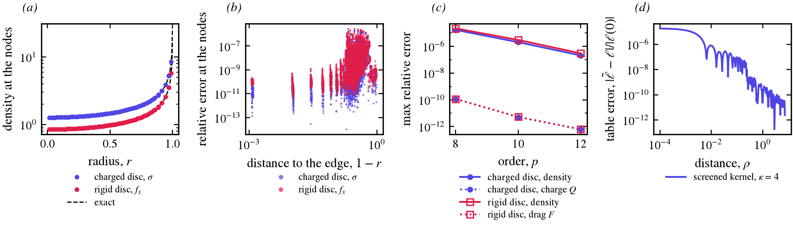
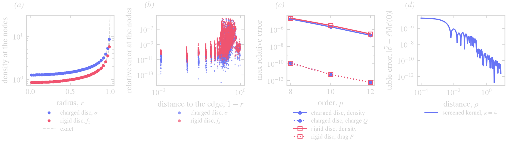
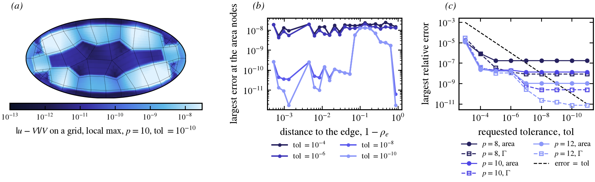
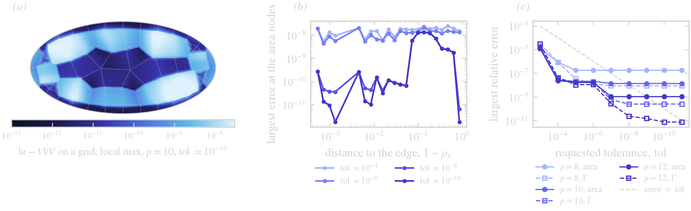

Examples
The scripts in examples/ evaluate or solve a problem with an exact solution and print their errors. They need only OpenSurfaces; run one from the package root:
julia -t 8 --project examples/charged_disc.jl

(a) The densities solved at p = 10 (5500 nodes, one edge layer) along a radius, against the exact edge-singular densities (dashed): the charged disc, $\sigma = 4/(\pi\sqrt{1 - r^2})$, and the rigid disc's traction, $f_x = 8/(3\pi\sqrt{1 - r^2})$. (b) The relative error at every node against the distance to the edge: below 2e-10 ($\sigma$) and 1.3e-9 ($f$) within 0.05 of the edge, where the densities are singular; the largest errors, 2.0e-6 and 3.0e-6, are in the interior. (c) Convergence in p: the largest density error falls from 1.7e-5 / 2.1e-5 at p = 8 to 2.1e-7 / 3.0e-7 at p = 12 (charged / rigid), and the relative error of the total charge $Q = 8$ and of the drag $F = 16/3$ from 1.2e-10 / 1.1e-10 to 6.3e-13 / 6.2e-13. (d) The table error of the screened kernel's remainder $\ell(\rho) = (e^{-\kappa\rho} - 1)/(4\pi\rho)$, $\kappa = 4$, relative to $|\ell(0)|$: 1.8e-5 at $\rho = 0$, 8.9e-8 for $\rho \ge 0.1$, 4.6e-10 for $\rho \ge 1$.
First-kind equations on the disc
charged_disc.jl: a conducting disc at potential 1, the first-kind equation $\int_\Omega \sigma(y)/(4\pi|x - y|)\,dA_y = 1$ on the unit disc, solved densely (evaluator_matrix of an Evaluator of LaplaceKernel3D with the stored, edge-weighted density, and \). Exact: $\sigma = 4/(\pi\sqrt{1 - r^2})$ and the capacitance $Q = 8$. At p = 8, 10, 12 (3584 to 7920 nodes) the density is within 1.7e-5, 2.0e-6, 2.1e-7 and the charge within 9.3e-10, 4.2e-11, 5.0e-12.
rigid_disc.jl: a disc translating with velocity $e_x$ in the free surface of a fluid half-space of viscosity 1, the same solve with Stokeslet3D(). Exact: the traction $f = 8/(3\pi\sqrt{1 - r^2})\,e_x$ and the drag $F = 16/3$ ($32\mu_f a U/3$ for a disc moving edgewise in an unbounded fluid of viscosity $\mu_f = 1/2$). The traction is within 2.1e-5, 3.0e-6, 3.0e-7 and the drag within 6.1e-10, 2.8e-11, 3.3e-12 at p = 8, 10, 12.
Both use one edge layer (edge_layers = 1): a $d^{-1/2}$ density continues into the graded layers, which are not weighted (Limits).
Pointwise errors


ellipse_single_layer.jl: the 3D Laplace single layer on the ellipse with semi-axes $a = 2$, $b = 1$ of the density $\sigma = 1/\sqrt{1 - x^2/a^2 - y^2/b^2}$, the charge density of a conducting elliptic disc, whose potential is the constant $V = b\,K(e)/2$ on all of $\Omega$ ($K$ the complete elliptic integral of the first kind, $e^2 = 1 - b^2/a^2$). It is evaluated with one Evaluator (one fast sum) at three target sets: the area nodes, the nodes of $\Gamma$, and 160 points of $\Omega$ off the mesh, down to $10^{-6}$ from the edge; every target has its own error $|u - V|/V$.
(a) The error on a 321 × 161 grid of points of $\Omega$ at p = 10 and tol = 1e-10, far below the floor set by p, with the panels drawn (the largest error within three grid cells: the signed error changes sign inside the panels). It is set panel by panel, because the corrections integrate the density's interpolant on the panels around each target: about 1e-8 on the large interior panels next to the edge layer, which resolve the steep part of $\sigma = 1/\omega$ least well, and about 1e-11 on the central panels. (b) The largest error against the distance to the edge, $1 - \rho_e$ ($\rho_e = \sqrt{x^2/a^2 + y^2/b^2}$), at p = 10: at tol 1e-4 and 1e-6 it is about 1e-8 everywhere; from tol 1e-8 it falls to about 1e-10 near the edge and stops at 1.4e-8 in the band, the same at 1e-10. (c) The largest error against tol for p = 8, 10, 12. The error is far below tol (at tol 1e-4, 9e-7 at p = 8 and 2.5e-8 at p = 10, 12) until it reaches a floor set by p, the resolution of the density on the panels: 1.8e-7, 1.4e-8 and 1.1e-9 at the area nodes, 8.6e-9, 2.5e-10 and 7.6e-12 on $\Gamma$. Below the floor, tol buys nothing and p does. Only at tol 1e-3 is the error (1.2e-5 to 3.1e-5) within a factor 100 of tol.
Potentials
single_layer_disc.jl: SingleLayer3D of the unit density on the unit disc against $S_\Omega[1] = E(r^2)/\pi$, at the area nodes and on $\Gamma$ (where it is $1/\pi$): 1.2e-8 and 3.6e-9 at the default tol, 6.6e-12 and 2.3e-12 at tol 1e-8.
stokes2d_curve.jl: the 2D Stokes single layer on a curve, with slp2d_velocity_matrix, traction_self_matrix, and an Evaluator of line sources. On a five-armed star (1020 nodes), $S[n] = 0$ on $\Gamma$ (2.1e-13) and at 440 targets inside down to 1e-6 from it (6.8e-13), and the interior traction of $S[n]$ is $n$ (6.1e-15); on circles of radius $a$, a constant density gives $a(1/4 - \tfrac12\log a)$ on $\Gamma$ and inside (to 5e-15).
Kernels from symbols
screened_kernel.jl: the screened kernel $e^{-\kappa\rho}/(4\pi\rho)$, $\kappa = 4$, from its symbol $1/(2\sqrt{k^2 + \kappa^2})$ on the base LaplaceKernel3D(). Its remainder decays only algebraically in $k$, so the constructor warns (see Kernels from Fourier symbols). The table is within 1.8e-5 of $|\ell(0)|$ (9.4e-8 for $\rho \ge 0.1$), and $S_\kappa[1]$ on the unit disc, against a polar-ray reference, within 6.5e-9 at tol 1e-6 and 1.8e-9 at tol 1e-8.
Geometry
holes_and_drops.jl: two drops, an ellipse with two holes and a disc, discretized together (discretize_curves) and meshed (build_mesh on [[outer, hole₁, hole₂], [drop₂]]): 64 boundary panels, 341 area panels, 34,100 nodes; mesh_quality; the area of the panels against the exact area (4.8e-14) and the second moment of the disc against $\pi R^4/2$ (4.2e-16).